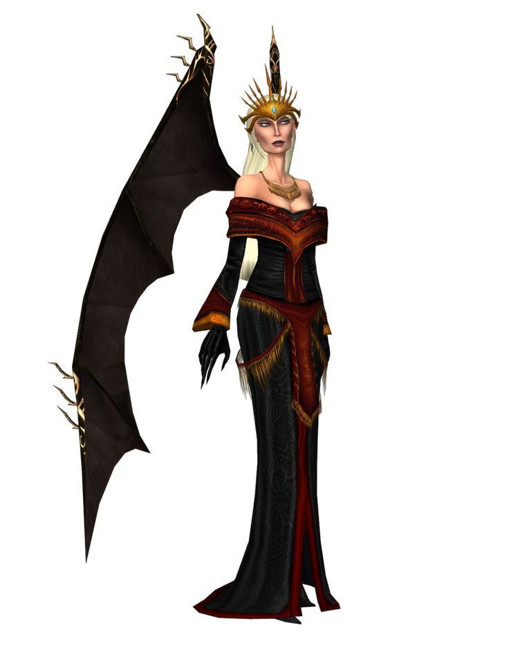
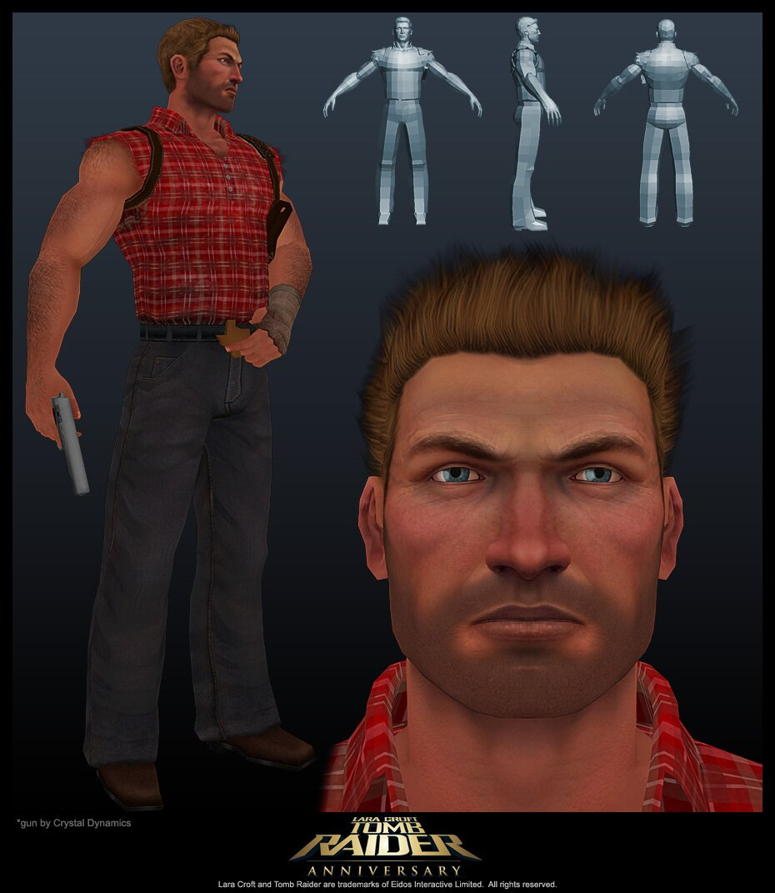
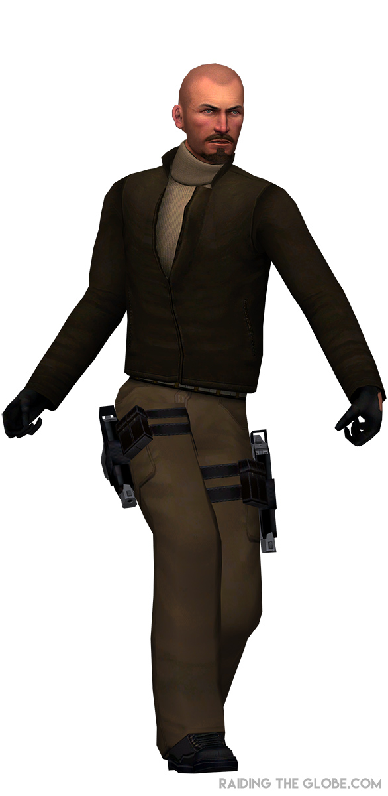

Tomb Raider 1:Characters
Lara Croft

Lara Croft is the main protagonist of the Tomb Raider series. She is a British archaeologist and adventurer known for her intelligence, athleticism, and resourcefulness. In the first game, she embarks on a quest to find the mythical Scion artifact, facing various challenges and enemies along the way. The iconic British archaeologist and adventurer. Intelligent, athletic, and fearless, Lara is hired to recover the Scion but quickly realizes there's a lot more at stake.
Natla
Jacqueline Natla. Her Role: Antagonist. Description: Mysterious businesswoman and head of Natla Technologies. She's later revealed to be one of the three Atlantean rulers, and the one who betrayed the others. Her ultimate goal is to use the Scion for power and domination.
Larson Conway
Larson Conway. His Role: Antagonist. Description: A mercenary working for Natla. He is tasked with stopping Lara from obtaining the Scion and is known for his ruthless tactics.An American mercenary hired by Natla. He clashes with Lara multiple times throughout the game but is generally more muscle than brains.
Pierre Dupont
Pierre Dupont. His Role: Antagonist. Description: A French treasure hunter and rival of Lara. He is also after the Scion and serves as a minor antagonist in the game.A French treasure hunter also working for Natla. He's sly and cunning, and you encounter him in Greece. He’s trying to beat Lara to the Scion pieces.